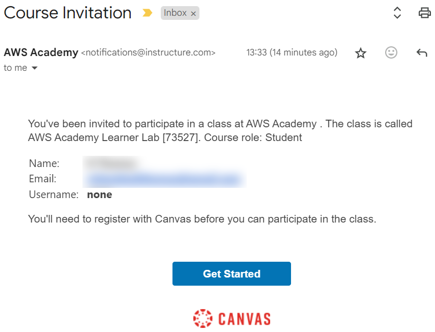
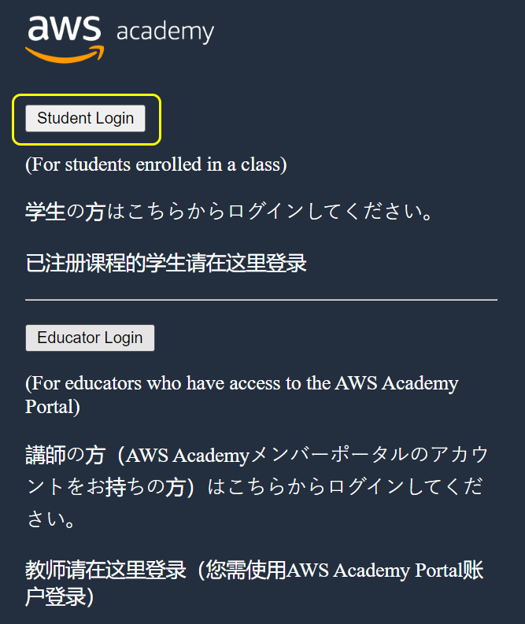
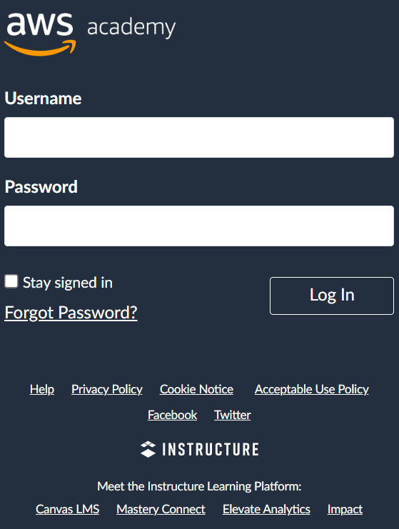
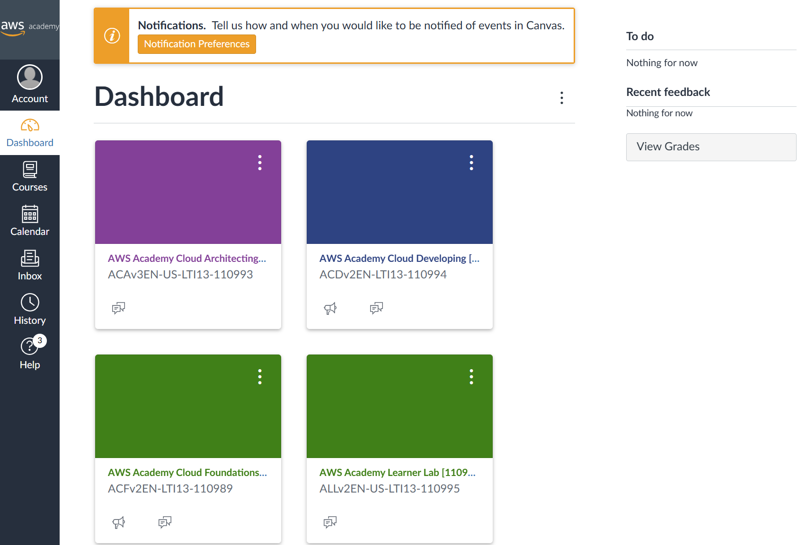
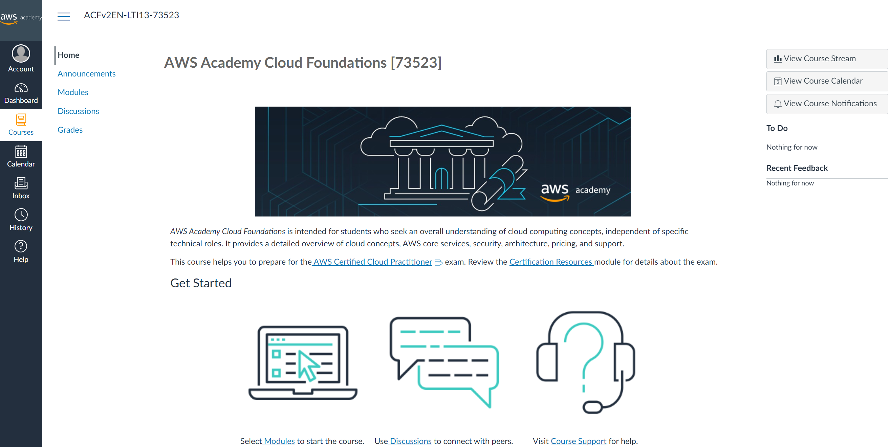
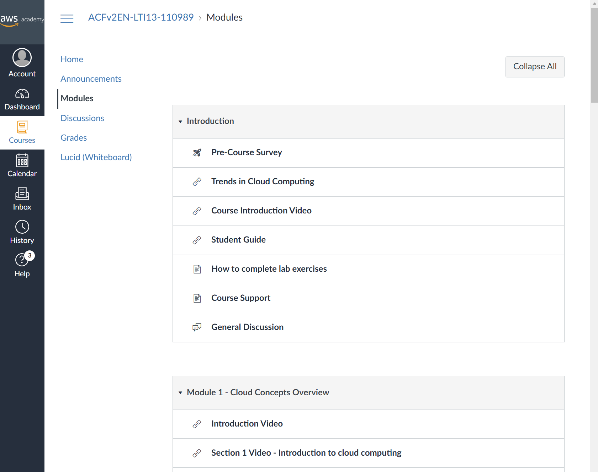

In this course we use AWS Academy as a resource to learn how to deploy and manage infrastructure on Amazon Web Services (AWS), as an example of a cloud based Infrastructure as a Service (IaaS) and Platform as a Service (PaaS) environment. You have been enrolled in three AWS Academy courses, as well as the AWS Learner Lab. We expect you to work your way through at least two of the AWS Academy courses as self-study material. The CSSE6400 course schedule1 provides a guide as to when we expect you to complete particular modules in the AWS Academy Cloud Foundations2, and AWS Academy Cloud Architecting3 courses.
The AWS Academy Cloud Developing4 course is provided as a supplementary resource. It covers much of the same content as AWS Academy Cloud Architecting5, but AWS Academy Cloud Architecting6 does so in a more structured and progressive manner. AWS Academy Cloud Developing7 treats each topic a little more independently. The advantage of this is that it also covers a couple of other topics, such as REST APIs and Containers, that you may find useful.
AWS Academy Learner Lab8 will be used in practical sessions from week 4 onwards. You will also use it to implement your solution to the Cloud Infrastructure assignment.
You need to accept your enrolment into:
AWS Academy Cloud Foundations [ 73523] course;
AWS Academy Cloud Architecting [ 73526] course;
AWS Academy Cloud Developing [ 73525] course; and
AWS Academy Learner Lab [ 73527] course.
And then login to the AWS Academy and navigate to your courses.
AWS Academy is an educational platform to teach you how to use AWS services. The content has been created by key developers in the AWS team.
Set up your AWS Academy account by responding to your email invitation and clicking Get Started. The email invitation will come from AWS Academy. Check your junk/spam folders.

Go to https://www.awsacademy.com/vforcesite/LMS_Login to login.
Press Student Login.
Use the email address that received the email invitation.
 
Once you login, you should see your account dashboard. This lists the courses in which you are enrolled.

Click on a course to go to its home page.

Navigate to the Modules tab and you will see the list of modules and their learning content for the course. The content includes videos, readings, and self-assessment exercises. The self-assessment exercises are to help you to know that you understand the content. These are not used as part of your assessment in this course.

Explore the AWS Academy interface and courses. Start working through the AWS Academy Cloud Foundations9 course. Try to complete at least half of it this week.
1https://csse6400.uqcloud.net/schedule/
2https://awsacademy.instructure.com/courses/73523
3https://awsacademy.instructure.com/courses/73526
4https://awsacademy.instructure.com/courses/73525
5https://awsacademy.instructure.com/courses/73526
6https://awsacademy.instructure.com/courses/73526
7https://awsacademy.instructure.com/courses/73525
8https://awsacademy.instructure.com/courses/73527